Latest: third authored surface pass — current before/after review
Latest: tent and bedding silhouette refinement — current native review
Latest: terrain-clipped floors and eight fitted game assemblies
24 October 2026 · actual native/studio renders · clean sources preserved
A second construction, smoothing and weathering iteration across 20 original asset families and 60 placed instances. This remains native development. The 250 invisible blocker volumes are NOT runtime integrated; power, host/LAN, water layers, human art and performance acceptance remain open.
Added real individual boards/fastenings, masonry courses and mortar, grate supports, boat rubbing strakes/oarlocks, moulded sanitary caps and handles, bin/cooler/chair/generator hardware, pavilion sign/roof seams, connected shrub twigs and finer packed diffuse weathering. Flat panels retain flat normals; curves are softened. Shader bands and overlapping boat caps found during review were corrected.

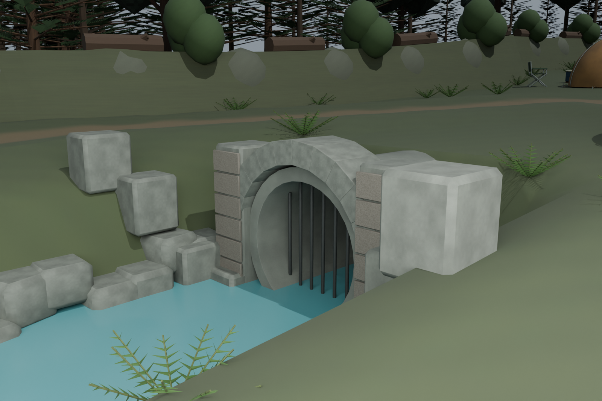


Individual boarding, open vent gaps, embedded fixing heads and roof fasteners. 25688 triangles.
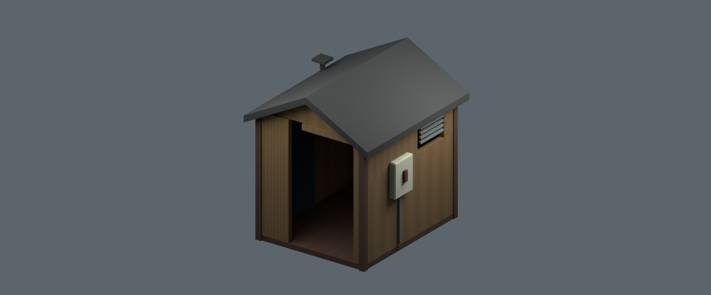

Finer physical edge radii and material wear. 2476 triangles.
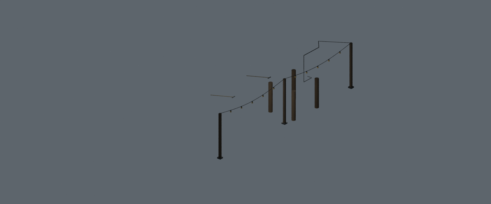
Curved rubbing strakes, proper oarlocks and thwart fasteners. 6828 triangles.
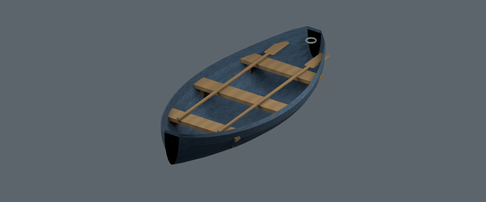

Folding pivots, frame fixings, finer woven seat/back weathering. 2648 triangles.
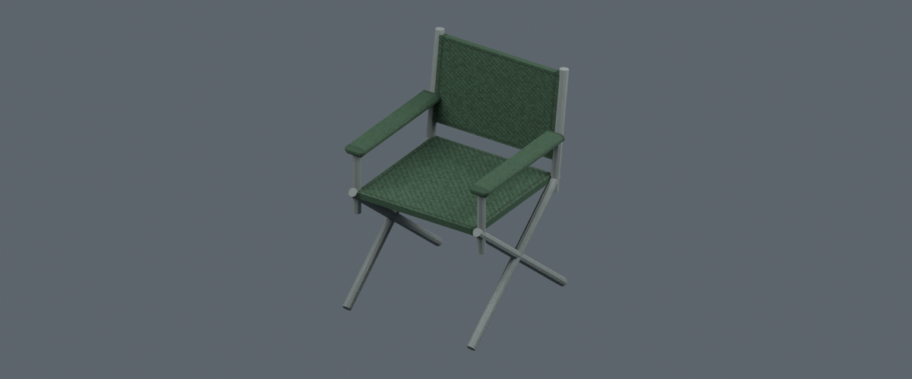

Drain plug, hinge pins, separate grips and lid seam wear. 1160 triangles.
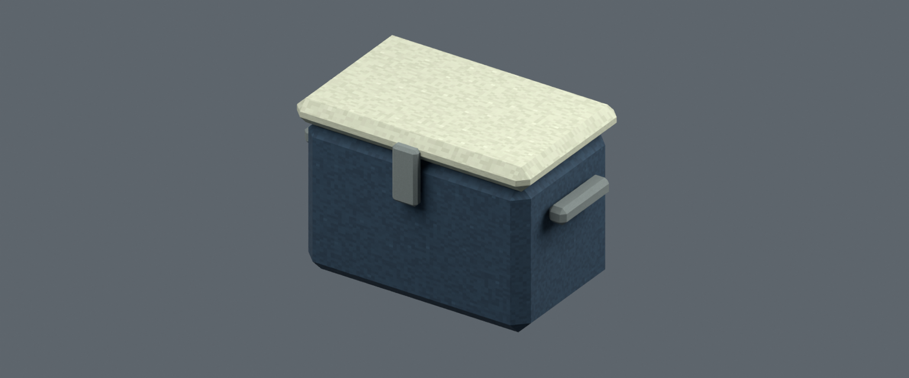

Curved moulded cap, panel fixings and a real rounded pull handle. 6428 triangles.
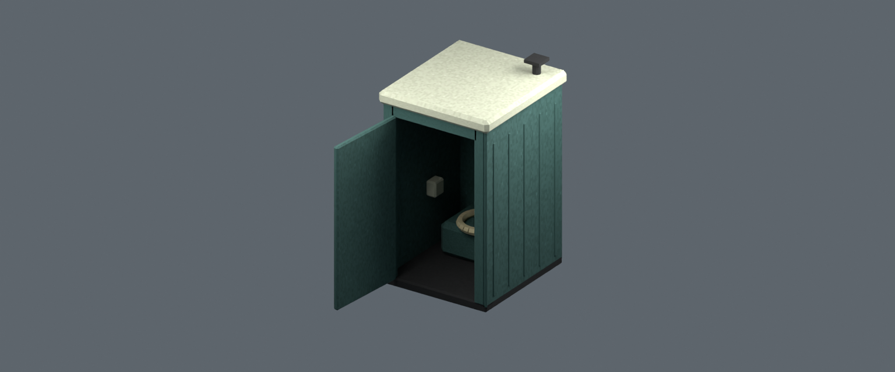

Curved moulded cap, panel fixings and a real rounded pull handle. 6428 triangles.
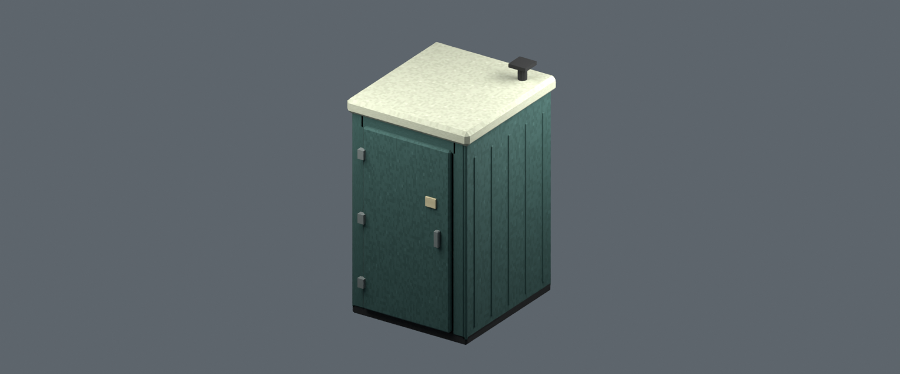

Hinged lid hardware, moulded grip and axle/hub details. 2564 triangles.
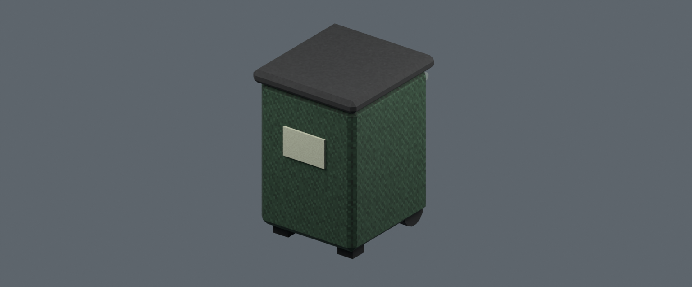

Smooth curved bronze surfaces, head/eyes and plaque fasteners. 5892 triangles.
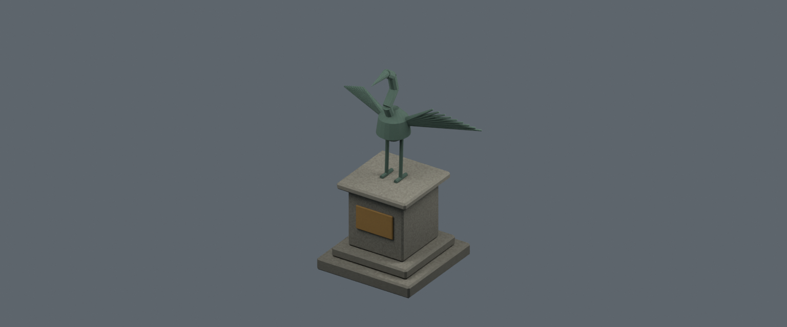

Real separate masonry courses, mortar gaps, flue courses and grate legs. 7778 triangles.

Attached leaf petioles, smooth woody stems and fine leaf variation. 17972 triangles.
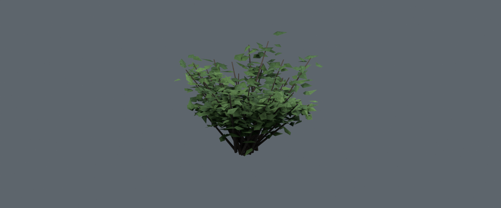
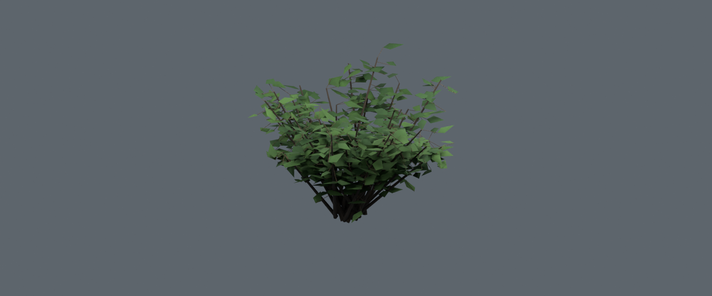
Attached leaf petioles, smooth woody stems and fine leaf variation. 18148 triangles.
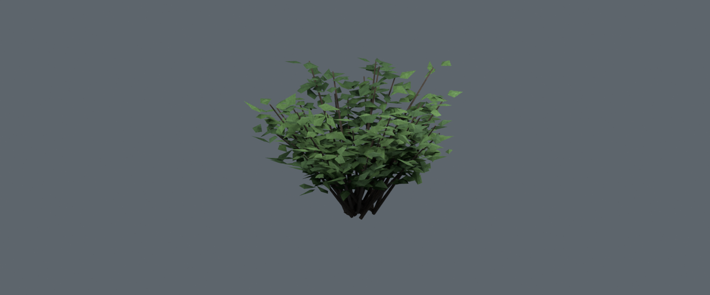
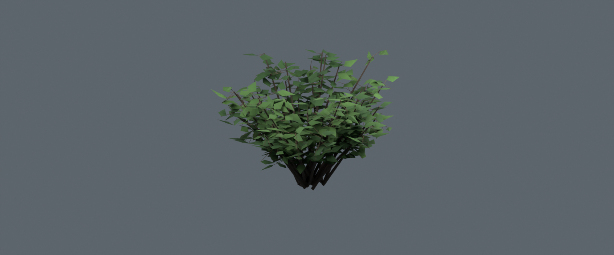
Individual headwall stone courses, smoother barrel, finer exposed stone breakup. 8812 triangles.
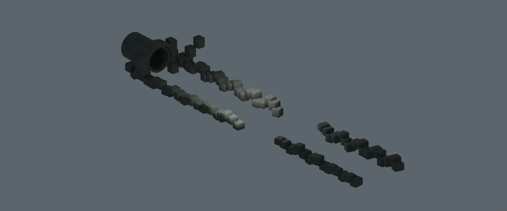
Fine woven canvas wear, seam/hem tone, smooth poles; floor/canvas thickness preserved. 1160 triangles.
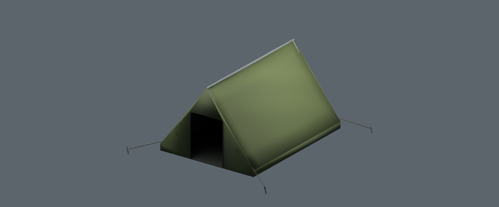

Fine woven canvas wear, seam/hem tone, smooth poles; floor/canvas thickness preserved. 3832 triangles.
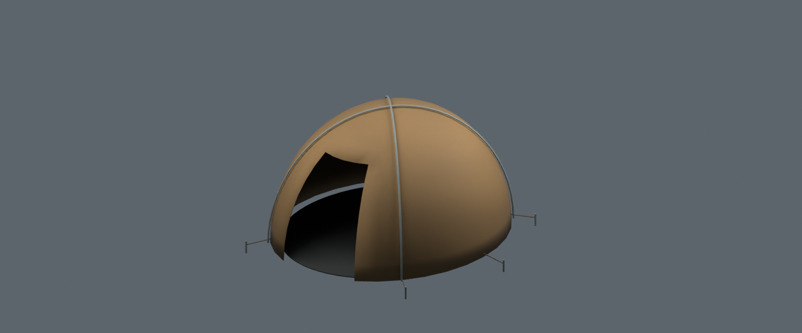

Finer quilt/weave, strap grime and smoothly shaded roll. 3540 triangles.
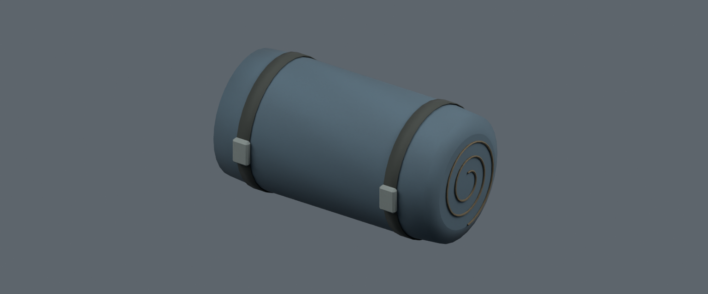

Skid anchors, fuel filler, cooling ribs and control fasteners. 5284 triangles.
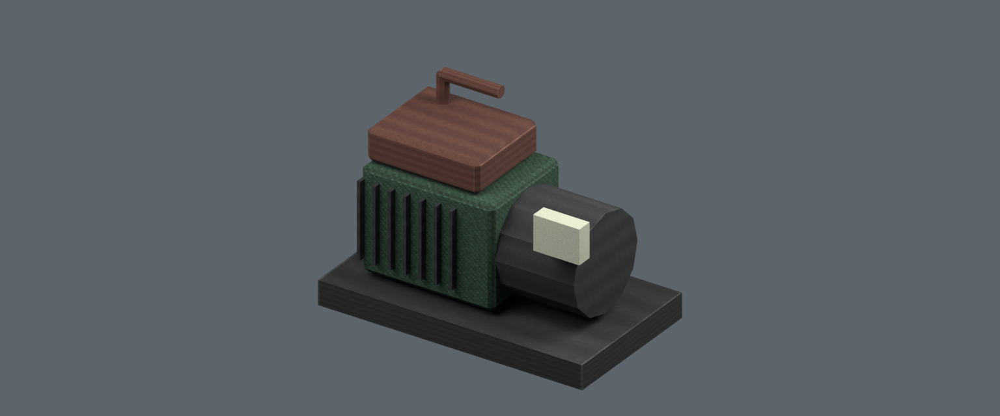

Supported nameboard/lettering, roof seams and finer timber/roof aging. 15684 triangles.
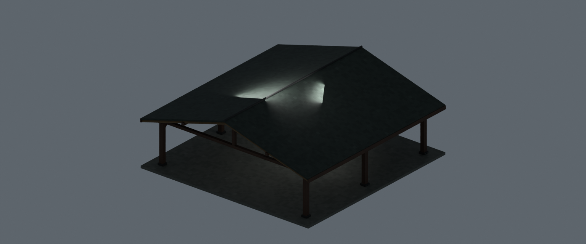

Countersunk construction fixings and finer timber grain/weathering. 5504 triangles.
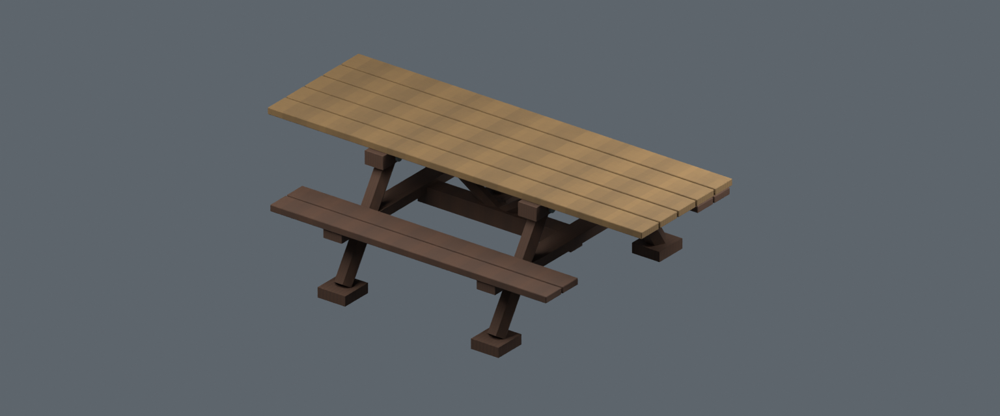

Finer soot/oxidation, softened rolled metal edge and fastener normals. 1760 triangles.
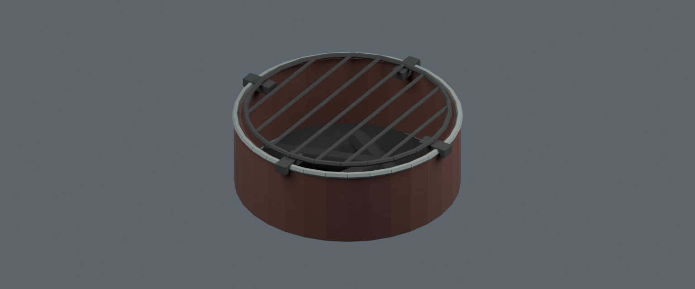

Final support-part checks also confirm the boat hull is closed, table fixings sit over actual bearing rails, and cold wood rests on the fireplace grate and ash bed. Fine diffuse textures are packed; clean source hashes remain unchanged.
20 actual GLB reimports and runtime parser loads:149586 triangles combined, unchanged50k/4MB per-asset caps. Native saved scene:10377 protected route samples,363 ritual samples,72 tent floor contacts,1640 crouch-entry probes,18 bedding contacts,126 foundation/ramp samples (max grade0.161949),1250 actual barrier rays and9 unobstructed culvert terrain rays. Dock review verifies36309 shoreline surface probes,12 matched seam points,960 actual foot-contact vertices across24 chair legs,1572 standing samples and2.48m lamp headroom.
These are native geometry/asset checks, not a new map unlock or runtime movement/lighting/performance acceptance. All new campsite approach grading/wear, finer art and loose physics remain pending.
Current native scene · Refinement sources/placements · Prior expanded construction checkpoint · Shared project gallery